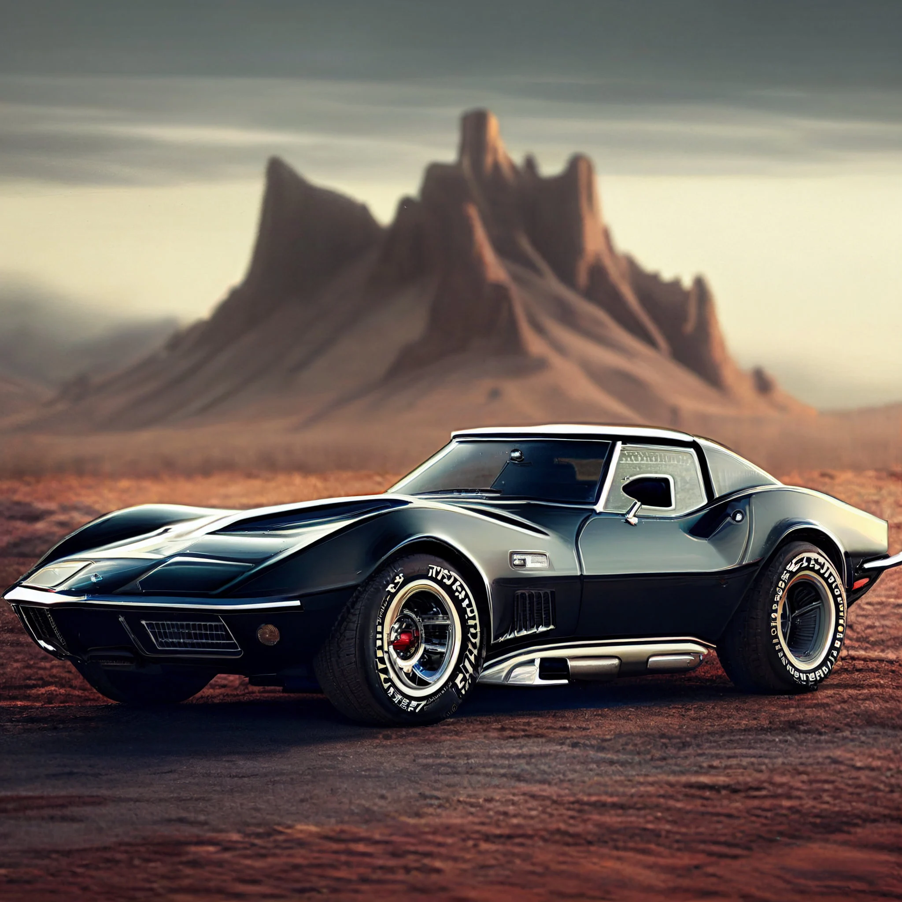

The 1969 Chevrolet Corvette stands as a timeless icon of American automotive excellence, embodying the spirit of performance, style, and innovation that defined an era. With its sleek, aerodynamic silhouette and muscular proportions, the '69 Corvette commands attention wherever it goes, signaling its formidable capabilities even while at rest. Under the hood, the '69 Corvette offered a range of powerful engine options, including the legendary 427 cubic inch V8, delivering exhilarating acceleration and a symphony of raw power that thrilled enthusiasts and racers alike. Whether equipped with the potent big-block or the high-revving small-block, the Corvette's performance was nothing short of breathtaking, propelling it to the forefront of the sports car world.

Beyond its formidable performance credentials, the '69 Corvette boasted a refined interior and a host of luxury features, making it a comfortable and inviting space for drivers and passengers alike. From its iconic pop-up headlights to its distinctive side vents and quad exhaust tips, every detail of the Corvette's design exuded a sense of purpose and sophistication that set it apart from the competition.
Today, the 1969 Chevrolet Corvette remains a highly sought-after collector's car, prized for its timeless design, exhilarating performance, and enduring legacy as one of the greatest American sports cars of all time. Whether tearing up the track or cruising down the open road, the '69 Corvette continues to captivate enthusiasts and evoke the spirit of a bygone era of automotive excellence.